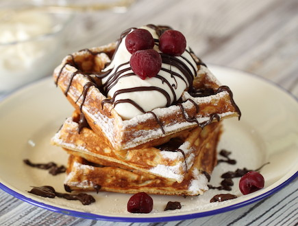

Оригинальные бельгийские вафли
Настоящие и вкуснейшие бельгийские вафли!

Prerequisites
- 💡уровень сложности:начинающий
- ⏲Подготовка: 10 минут
- ⏲Время приготовления: 10-12 минут
- ⏲Общее время: 20-22 минут
- 👥Размер порции: 4
Ингредиенты
Вафельная основа
- 300 грамм муки
- 4 яйца
- 1 стакан сахара
- 1 чайная ложка пищевой соды
инструкции
- Разогрейте духовку до 180°C (верхний и нижний нагрев).
- Смешайте все ингредиенты основы для вафель в большой миске до получения однородной массы.
- Выложите смесь в застеленный бумагой противень и разложите в квадратную форму.
- Выпекайте в разогретой духовке 10–12 минут или пока вафли не приобретут темно-золотистый цвет.
Video